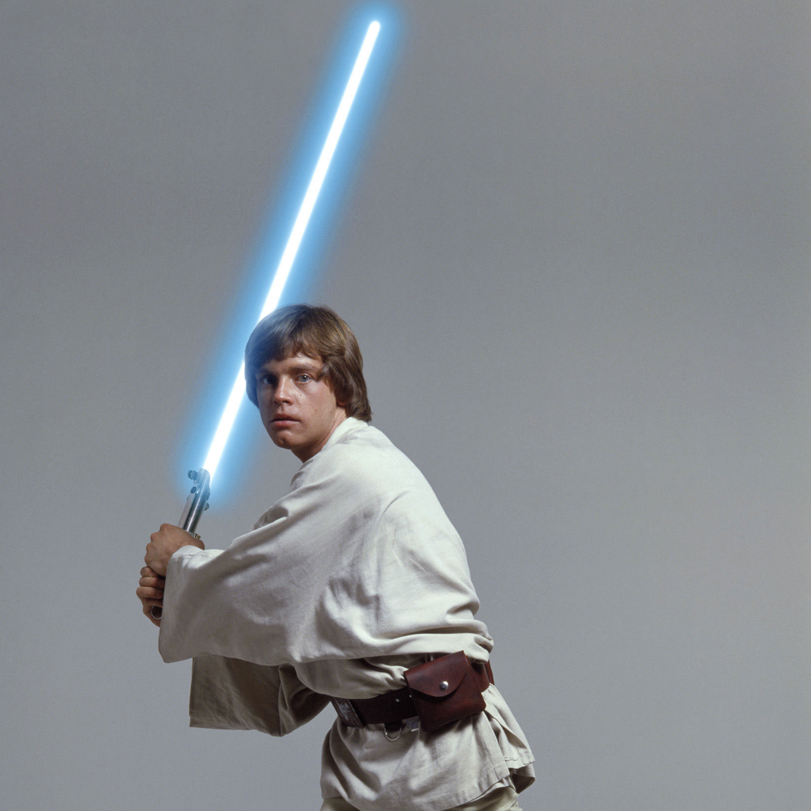
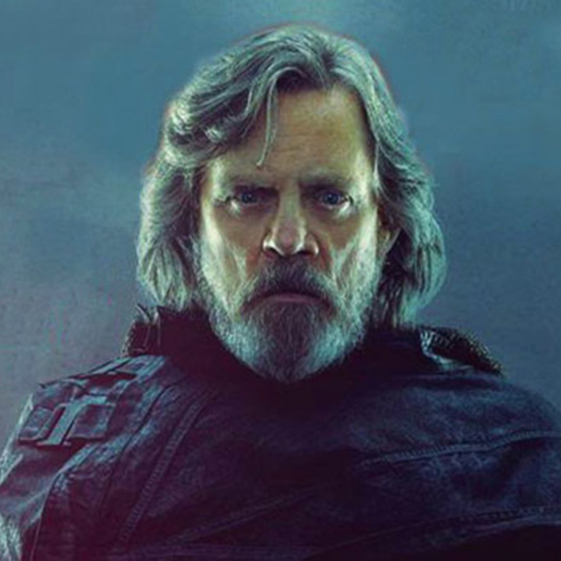

Luke Skywalker
"I'M LUKE SKYWALKER. I'M HERE TO RESCUE YOU." - A NEW HOPE
About
Luke Skywalker was a Tatooine farmboy who rose from humble beginnings to become one of the greatest Jedi the galaxy has ever known. Along with his friends Princess Leia and Han Solo, Luke battled the evil Empire, discovered the truth of his parentage, and ended the tyranny of the Sith. A generation later, the location of the famed Jedi master was one of the galaxy’s greatest mysteries.
Information
- species : Human
- gender : Male
- height : 1.72m
- affiliations : Rebel Alliance, Jedi Order
- appearances : Star Wars: Episode IV A New Hope, Star Wars: Ep..
- locations : Polis Massa, Lars Moisture Farm, Tatooine
- tool : Bacta Tank, Moisture Vaporator
- vehicles : T-16 Skyhopper, X-34 Landspeeder, X-wing Starfi...
- weapons : Blaster Pistol, Lightsaber, Luke Skywalker's Li..
Gallery

